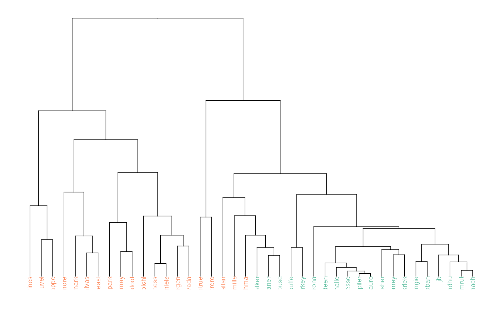
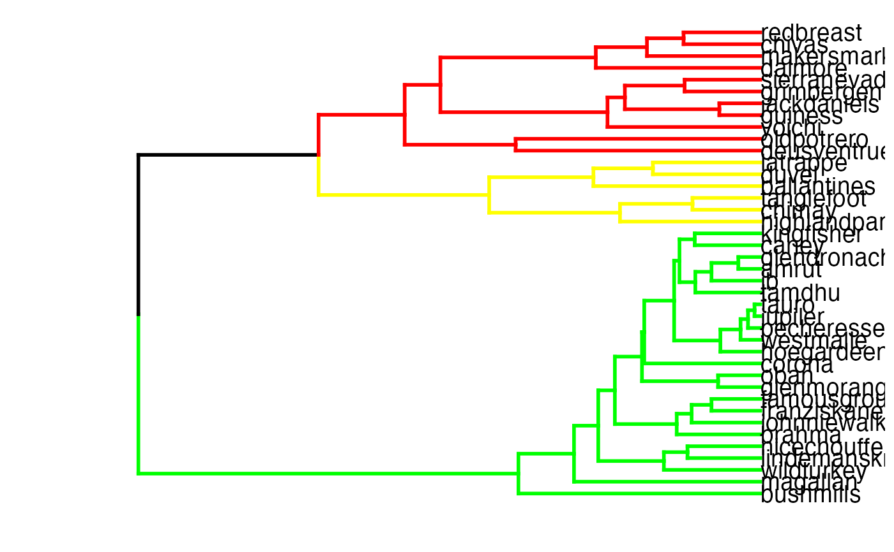

Performs hierarchical clustering through dist and hclust. So far it is mainly
a wrapper around these two functions, plus plotting using the dendextend package facilities.
CLUST(x, ...) # S3 method for default CLUST(x, ...) # S3 method for Coe CLUST(x, fac, type = c("horizontal", "vertical", "fan")[1], k, dist_method = "euclidean", hclust_method = "complete", retain = 0.99, labels, lwd = 1/4, cex = 1/2, palette = pal_qual, ...)
Arguments
| x | |
|---|---|
| ... | useless here |
| fac | factor specification for fac_dispatcher |
| type |
|
| k |
|
| dist_method | to feed dist's |
| hclust_method | to feed hclust's |
| retain | number of axis to retain if a PCA object is passed. If a number < 1 is passed, then the number of PCs retained will be enough to capture this proportion of variance via scree_min |
| labels | factor specification for labelling tips and to feed fac_dispatcher |
| lwd | for branches (default: |
| cex | for labels (default: |
| palette | one of available palettes |
Value
a ggplot plot
See also
Other multivariate: KMEANS,
KMEDOIDS, LDA,
MANOVA_PW, MANOVA,
MDS, MSHAPES,
NMDS, PCA,
classification_metrics
Examples
#>CLUST(bf)#> Warning: Removed 79 rows containing missing values (geom_point).# with a factor and vertical CLUST(bf, ~type, "v")#> Warning: Removed 79 rows containing missing values (geom_point).# with some cutting and different dist/hclust methods CLUST(bf, dist_method="maximum", hclust_method="average", labels=~type, k=3, lwd=1, cex=1, palette=pal_manual(c("green", "yellow", "red")))#> Warning: Removed 79 rows containing missing values (geom_point).# On PCA bf %>% PCA %>% CLUST#> Warning: Removed 79 rows containing missing values (geom_point).